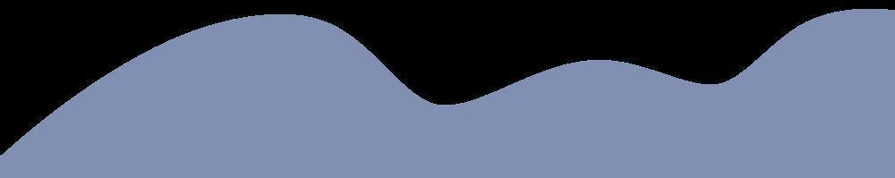
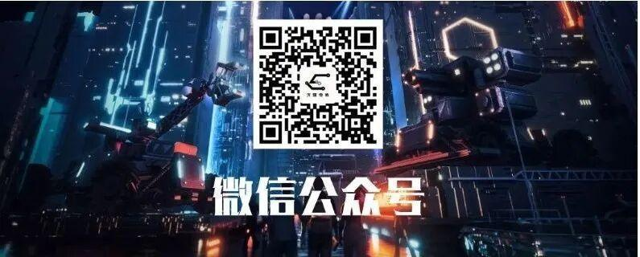

人事部---一个充满爱的大家庭
人事部
最美人事
前世五百次回眸，换来今生的相遇
在最美的年纪，遇见最好的你们
有你在，真好

1、负责社团人员信息管理，要求认真细致，能够做到查找每个社团人员的信息。
2、负责社团日常活动的人员安排，通知。
3、负责社团理工杯、电子设计大赛以及其他比赛和活动的报名信息整理，汇总。
4、与社联对接，按时上交社团例会申请表。
5、负责发布各种活动通知，必要时单独通知到每一个社团成员。
6、负责每周五教学活动以及社团其他活动的签到，要求熟练制作签到表。

我叫齐志媛，我加入人事部的原因是因为那个‘人’字。希望在人事部我能结交到更多优秀的朋友，而且我认为人事部是一个可以锻炼人的地方，我很荣幸加入人事部这个大家庭!大家请多指教♡
大家好，我是人事部的刘凯，很开心在社团度过了一学期。加入人事部的初衷是想为社团做贡献，让自己的大学生活更丰富。但经过这几个月的社团活动，人事部它不仅教会了如何去高效办事，更让我感受到了家一般的温暖。热情的学长学姐不仅在工作上帮助我，在平时的学习中也对我给予很大帮助。同时，在社团人事部我认识了好多新朋友，大家因为有共同的爱好而相遇，和他们相处我很快乐。我希望人事部可以越来越好，我更相信人事部会因我们的努力而越来越精彩!
大家好，我是人事部的何涛。当初因为感兴趣，抱着一颗好奇心来到了电协人事部。在这里，学长学姐都很热情，他们教会了我很多。教我如何制作小车，教我组装、焊锡。在理工杯机器人大赛协助学长，见识很多厉害的小车，也更加了解这里。
大家好，我是人事部的杨鹏腾。由于爱好，我加入了人事部，做了几个表格，自己的动手能力提高了
大家好，我是人事部的张琰崧。人事部是电协必不可少的部门，我加入人事部是为了得到更好的锻炼和学到更多的东西，来到电协这个大家庭以后，我明白了科技的力量，看到一个又一个机器人在比赛场上的激烈比赛，我深感振奋，在这里我学到了更多的技术和知识以及与更多的人交流和互相学习。
我是人事部张玉玺，为了在大学里锻炼自己加入了人事部，在这里和学长学姐学到了很多东西，丰富了大学生活，希望今后能在人事部获得更好的发展。
排版：牛星月
图片：人事部
